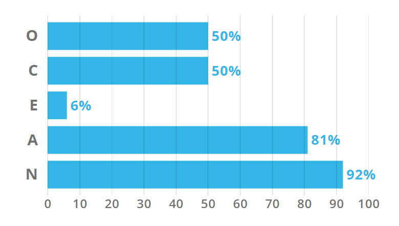
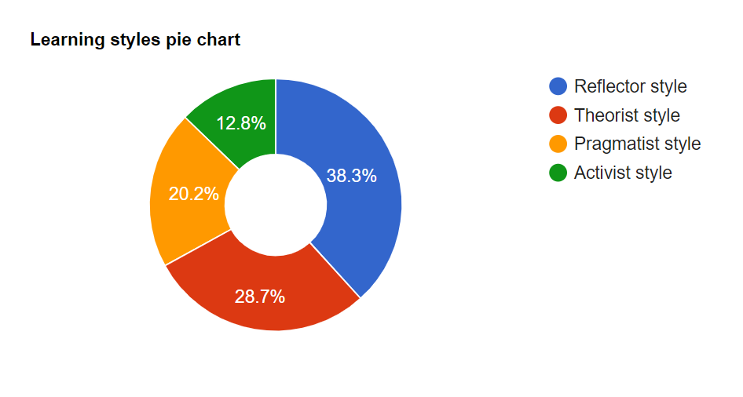

After undergoing three online personality test, I have done some reflection on what these results mean to me. The first test conducted was the iconic Myer Briggs test . The results are in and my personality type has come back as INFJ-T, but what does this mean? Essentially this describes me as introverted, intuitive, feeling and judging strongly based on morals. Breaking this down it’s believed that INFJ people are meant to be introverted idealists with strong moral standards. I think this is a rather accurate reflection of my character of all the tests I took, as I have always been rather introverted and no matter the consequences I stick to what I believe is right.

The second test undertaken was the big five personality test . which breaks my score down into five dimensions of personality: Openness, Conscientiousness, Extraversion, Agreeableness and Neuroticism. The breakdown is quite clear and heavily favours agreeableness and neuroticism. Both typically go hand in hand, the neuroticism tends to show people who hold themselves to strong morals and think strongly with their feelings and high agreeableness tends to mean that these people tend to help others rather than help themselves. These tests results are rather varied in accuracies, I can easily agree with the high agreeableness and high neuroticism and even the low extraversion, but the openness and conscientiousness should be far lower.

The last test I took was the learning styles test . This test developed based on the Honey and Mumford thought on study types. They believed there was four main learning types; Reflector, Theorist, Pragmatist and Activist. This test gave some rather all rounding results with low of activist and higher in reflector and theorist. A reflector is someone who takes their time to process information and makes decisions based on knowledge as opposed to making hasty or irrational choices. The theorist is similar and approaches problems in a logical manner and value rationality and objectivity highly.

These results display a clear personality of someone who is rather introverted and quiet, not because they are shy but because they’re standing back and processing the information around them. A person with these personality traits demonstrates the ability to work well with more outgoing, outspoken people as they’re willing to accept and discuss ideas rather than work with other introverted people who might be more reserved.